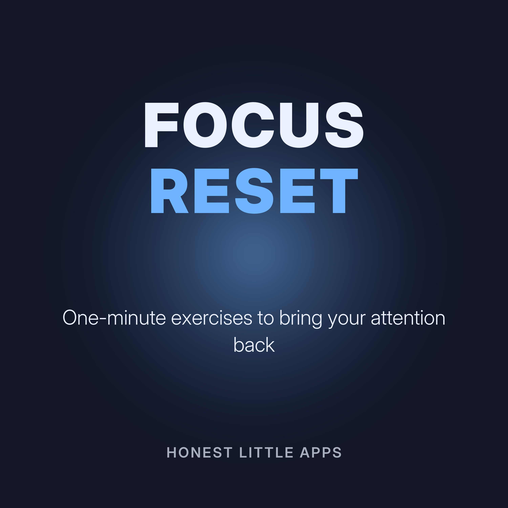

One-Minute Focus Reset
One-minute guided exercises to bring your attention back when it's scattered: counting breaths, single-point focus, and short listening drills. Calm, practical, and not medical advice.
Made by Honest Little Apps, the makers of Attention Age: Focus Test, an iPhone app with a five-minute test to find your focus baseline and short daily training. Narrated with a synthetic (text-to-speech) voice.
- Count ten breathsClose your eyes, or lower your gaze.
- One pointPick one small point in front of you.
- Listen for three soundsClose your eyes and listen.
- Five, four, three, two, oneName five things you can see.
- Single taskChoose one task for the next ten minutes.